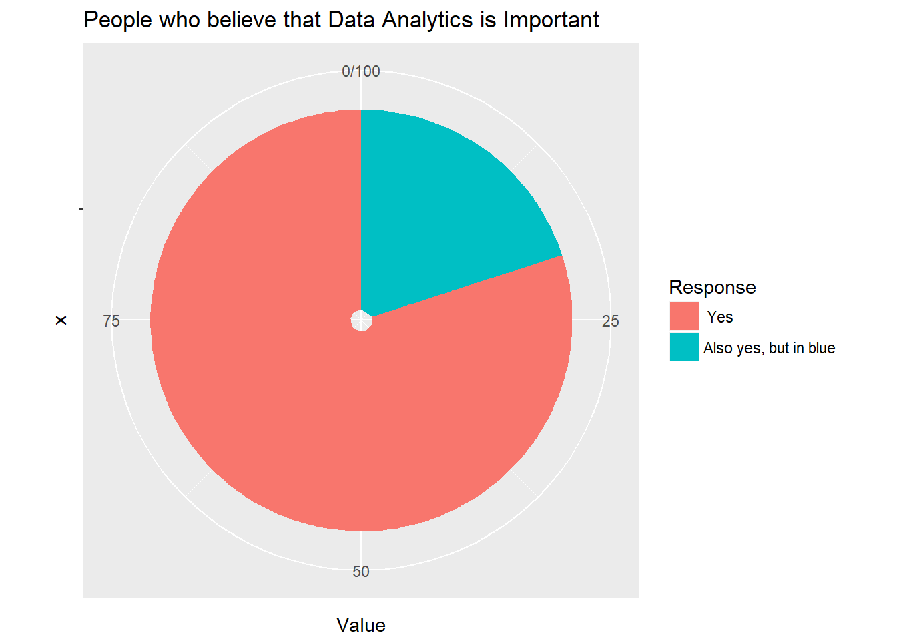

Chapter 1 Introduction
Lets take a Moment

Organisations collect data that they have gathered from customers, businesses, economy and practical experience. Data is then processed after gathering and is categorised as per the requirement and analysis is done to study purchase patterns and etc.
It has always been important to know ones customer and have an understanding of the market one is operating in, but it has only been in recent years that we’ve experience a tremendous acceleration in the rate of data generation.

The idea is to make sense of the data you have, to analyse it and share better business prospects in the near future and how you’re going to do it, is with the concepts of analytics. It is the science of extracting trends, patterns and useful information from a set of existing data which will be of no use if not analysed. It is a kind of business intelligence that is now used for gaining profits and making better use of resources. This can also help in improving managerial operations and leverage organisations to next level.
If not analysed this data is going to get wasted whereas if analysed properly this data can help us in finding information that is powerful to bring in a change in the patterns of how business is already working or going.
1.1 The R Language
R is a free software environment for statistical computing and graphics. It compiles and runs on a wide variety of UNIX platforms, Windows and MacOS.
The R environment
R is an integrated suite of software facilities for data manipulation, calculation and graphical display. Among other things it has
- an effective data handling and storage facility,
- a suite of operators for calculations on arrays, in particular matrices,
- a large, coherent, integrated collection of intermediate tools for data analysis,
- graphical facilities for data analysis and display either directly at the computer or on hardcopy, and
- a well developed, simple and effective programming language (called ‘S’) which includes conditionals, loops, user defined recursive functions and input and output facilities. (Indeed most of the system supplied functions are themselves written in the S language.)
The term “environment” is intended to characterize it as a fully planned and coherent system, rather than an incremental accretion of very specific and inflexible tools, as is frequently the case with other data analysis software.
R is very much a vehicle for newly developing methods of interactive data analysis. It has developed rapidly, and has been extended by a large collection of packages. However, most programs written in R are essentially ephemeral, written for a single piece of data analysis.
You can get yourself aquainted with the basics of R by visiting this link
You can download R by clicking the link here.
1.2 R Studios
RStudio is an integrated development environment (IDE) for R. It includes a console, syntax-highlighting editor that supports direct code execution, as well as tools for plotting, history, debugging and workspace management.
RStudio is available in open source and commercial editions and runs on the desktop (Windows, Mac, and Linux) or in a browser connected to RStudio Server or RStudio Server Pro (Debian/Ubuntu, RedHat/CentOS, and SUSE Linux).

Downloading R Studios
- Before downloading R Studios make sure you have R installed on your system. If not the refer the previous page for the link
Basically there are two version of RStudio ( whats the difference? )
Desktop Version
Server Version
We recommend installation of the server version or R Studio and once its installed we can access it using our browser at port 8787
Click here to install R Studio for linux.